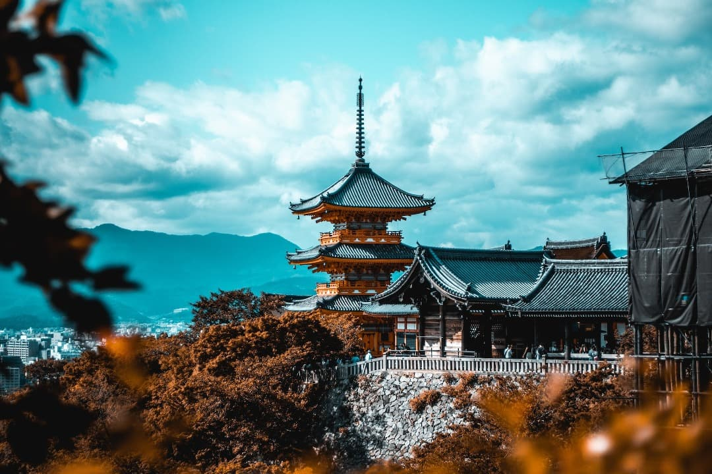

Vamos a Japón
Japón es un país fascinante que ofrece una mezcla única de tradición y modernidad, una cultura rica y una belleza natural impresionante. Aquí tienes una reseña para turistas que desean viajar por Japón
Tokio Japón

Tokio se encuentra en la bahía de Tokio, situada en la región de Kanto de Honshu, la isla más grande de Japón. Los aeropuertos más cercanos son Haneda, conocido oficialmente como el Aeropuerto Internacional de Tokio, y el Aeropuerto de Narita, el aeropuerto internacional más grande de Japón. Tokio es famosa por su moda y sus zonas de compras, que incluyen los barrios comerciales de moda de Harajuku y Shibuya, así como las tiendas insignia de lujo de Ginza.
Shinjuku es un próspero distrito comercial, donde se combinan relucientes rascacielos y callejuelas con mucho ambiente llenas de pequeños bares. 4. Asakusa es el corazón del centro de Tokio, con templos antiguos y tiendas tradicionales. Tokio es un paraíso gastronómico con más restaurantes con estrellas Michelin que cualquier otra ciudad del mundo, junto con cientos de tiendas de ramen económicos y deliciosos.
Tiempo en Tokio
En Tokio, la primavera es suave y le siguen los veranos cálidos y húmedos con tifones ocasionales. El otoño es fresco y los inviernos fríos y secos. La nieve es poco habitual, pero se han registrado algunas nevadas en los primeros meses del año. El pronóstico del tiempo de una semana para Tokio es una guía precisa del tiempo para la semana siguiente.
Kioto Japón
La ciudad de Kioto atrae a millones de visitantes, tanto locales como internacionales, deseosos de descubrir la tradicional cultura japonesa. Templos y santuarios, como los de Kiyomizu-dera o Kinkakuji, y los cercanos bosques de bambú de Arashiyama, suscitan el interés de multitud de turistas. Alójate en un ryokan pintoresco, date un baño en un onsen rejuvenecedor y admira el cambio de las estaciones con los cerezos en flor y el follaje brillante. Lo mejor de todo es que tardarás muy poco en llegar a la magia de Kioto en tren bala desde Tokio. Más allá de la ciudad, la prefectura de Kioto esconde innumerables tesoros rurales. Amanohashidate, en el norte de la prefectura, se ha considerado durante mucho tiempo uno de los tres paisajes más espectaculares de Japón. Miyama, caracterizada por su circundante paisaje montañoso, es una de las pocas ciudades del país en las que aún pueden apreciarse granjas con techos de paja, muchas de las cuales continúan habitadas. Disfruta de deliciosas verduras locales y el famoso té verde cultivado en Uji.
No te pierdas
- Los majestuosos templos, santuarios, palacios y jardines de la ciudad de Kioto y sus alrededores
- La variada y exquisita gastronomía kaiseki y los refinados alojamientos locales o ryokan tradicionales
- Las playas de arena blanca y las aguas termales ricas en minerales de la península de Tango
- Amanohashidate, uno de los tres lugares más espectaculares de Japón
Osaka

Osaka está cerca de Tokio en tren bala, pero tiene una personalidad muy diferente a la de la capital japonesa. Bájate del tren bala y descubre una zona con una animada vida nocturna, una gastronomía deliciosa y habitantes simpáticos y abiertos. Además de un montón de tiendas y atracciones modernas, en Osaka también hay lugares de interés histórico, entre los que destaca el Castillo de Osaka, donde conocerás la historia japonesa y podrás pasear por sus jardines, especialmente hermosos durante la época de floración de los cerezos en abril.
Cómo llegar
Desde Tokio, el Shinkansen o tren bala Takaido-Sanyo te llevará hasta la estación ferroviaria de Shin-Osaka. El trayecto dura aproximadamente dos horas y media. Una vez en la estación de Shin-Osaka, haz transbordo a la línea JR local para llegar hasta la estación de Osaka. Desde el aeropuerto internacional de Kansai (KIX), la línea Nankai o JR te llevará hasta la estación de Tennoji o la de Namba.
No te pierdas
- Los carteles luminosos de neón del Puente Dotombori y el barrio de Minami en Osaka
- Una visita al parque del castillo de Osaka y al Parque Conmemorativo de la Expo de 1970, donde se celebró la exposición
- Algunos de los festivales más importantes de la temporada, como el Tenjin Matsuri, el Kishiwada Danjiri o el Ebessan
- Degustación de algunas de las delicias culinarias locales más famosas, especialmente en barrios como Tenma o Ura Namba